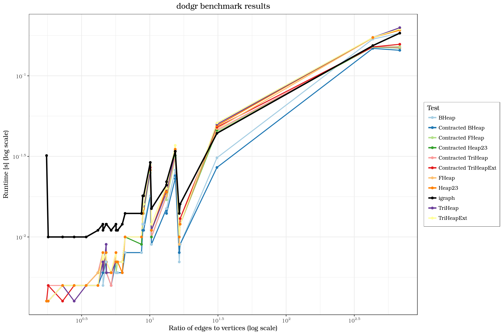
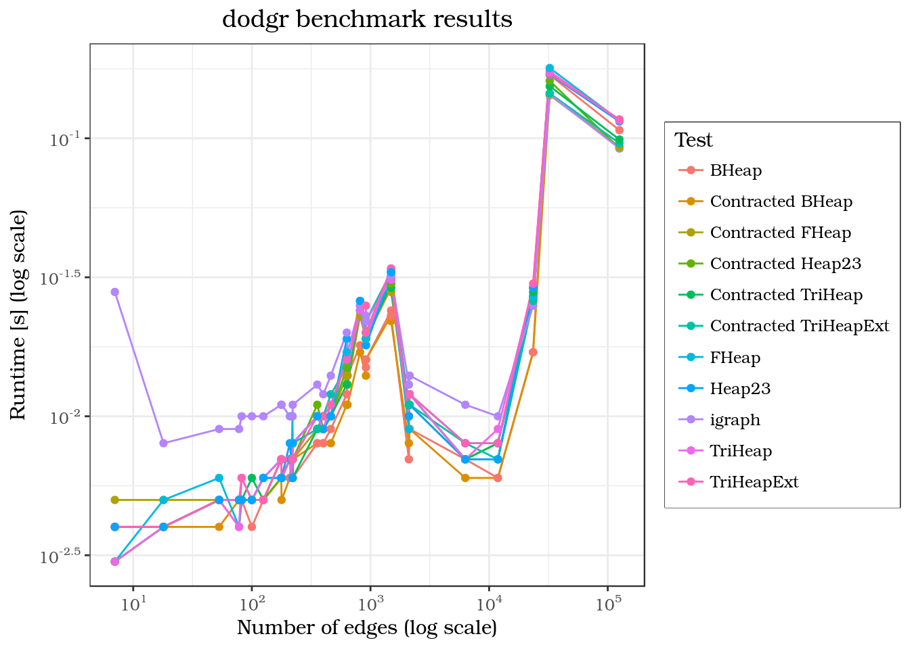
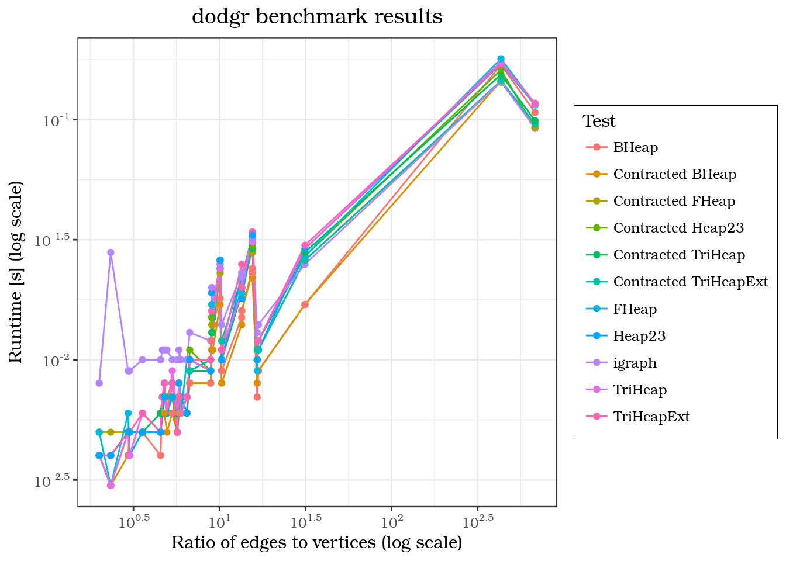

This vignette contains runtime comparisons for a number of routing operations between random vertices using distance calculation functions from the dodgr and igraph packages. The experiments are run using the compare_heaps() function, which successively calls functions igraph::distances() and then dodgr_dists() with all implemented options for the heap parameter and measures their respecive runtimes.
The graph data on which the tests are performed are taken from the igraphdata package.
To be able to run compare_heaps(), we need to create data.frame objects from the igraphdata data. As we need at least columns for each graph edges’ origin, destination and weight, not all igraphdata are fit for our purposes, because they lack a weight column. In these cases, all their edge weights are assumed to be 1 so they can be brought into a valid format.
The following code compiles all igraph objects into a list of usable data.frame objects. If the data features a column weight, it will be used for the edge weights, otherwise all edge weights are assumed to be 1.
datasets <- data (package = "igraphdata")
datasets <- datasets$results [, "Item"]
all_graphs <- list ()
gr_el <- 1
for (i in seq_along (datasets))
{
dat <- datasets [i]
data (package = "igraphdata", list = dat)
dat_graph <- get (dat)
if (class (dat_graph) == "igraph")
dat_graph <- list (dat_graph)
for (j in seq_along (dat_graph))
{
graph <- dat_graph [[j]]
graph <- igraph::get.data.frame (graph)
from_id <- graph$from
to_id <- graph$to
if ("weight" %in% names (graph))
d <- graph$weight
else
d <- 1
graph_out <- data.frame (from_id, to_id, d)
all_graphs [[gr_el]] <- graph_out
gr_el <- gr_el + 1
}
}Now, compare_heaps() can be run for all graphs. First, show the number of vertices and edges of all graphs in the list.
num_edges <- unlist (lapply (all_graphs, nrow))
num_vertices <- unlist (lapply (all_graphs, function (i)
nrow (dodgr_vertices (i))))
data.frame (num_edges, num_vertices, ratio = num_edges / num_vertices)## num_edges num_vertices ratio
## 1 7 3 2.333333
## 2 817 81 10.086420
## 3 23473 748 31.381016
## 4 125409 184 681.570652
## 5 178 36 4.944444
## 6 209 36 5.805556
## 7 215 36 5.972222
## 8 177 38 4.657895
## 9 125 22 5.681818
## 10 100 22 4.545455
## 11 82 23 3.565217
## 12 221 38 5.815789
## 13 400 45 8.888889
## 14 220 34 6.470588
## 15 53 18 2.944444
## 16 356 53 6.716981
## 17 2137 127 16.826772
## 18 2106 127 16.582677
## 19 640 70 9.142857
## 20 631 70 9.014286
## 21 915 68 13.455882
## 22 916 68 13.470588
## 23 1491 96 15.531250
## 24 1492 96 15.541667
## 25 6300 1316 4.787234
## 26 78 26 3.000000
## 27 18 9 2.000000
## 28 463 45 10.288889
## 29 32424 75 432.320000
## 30 11855 2230 5.316143benchmarks <- lapply (all_graphs, function (i)
compare_heaps (i, nverts = 100, replications = 10))
saveRDS (benchmarks, file = "benchmark_data.rds")benchmarks <- readRDS ("benchmark_data.rds")
elapsed <- unlist (purrr::map (benchmarks, "elapsed"))
tests <- unlist (purrr::map (benchmarks, "test"))
tests <- as.character (tests)
tests <- sub ("d <- dodgr_dists\\(graph, from = from_id, to = to_id, heap =",
"Contracted", tests)
p <- "d <- dodgr_dists\\(graph_contracted, from = from_id, to = to_id, heap = "
tests <- sub (p, "", tests)
tests [grepl ("igraph", tests)] <- "igraph"
tests <- gsub ("\"", "", tests)
tests <- gsub ("\\)", "", tests)
tests <- as.factor (tests)
n_tests <- dim (benchmarks [[1]]) [1]
ratio <- rep (num_edges / num_vertices, each = n_tests)
num_vertices <- rep (num_vertices, each = n_tests)
num_edges <- rep (num_edges, each = n_tests)
bm <- data.frame (num_vertices, num_edges, ratio, Test = tests, elapsed)
library (ggplot2)
library (scales)Plot runtime versus numbers of vertices:
ggplot (bm) +
geom_line (aes (x = num_vertices, y = elapsed, colour = Test)) +
geom_point (aes (x = num_vertices, y = elapsed, colour = Test)) +
scale_x_log10 (breaks = trans_breaks ("log10", function (x) 10^x),
labels = trans_format ("log10", math_format (10^.x))) +
scale_y_log10 (breaks = trans_breaks ("log10", function (x) 10^x),
labels = trans_format ("log10", math_format (10^.x))) +
labs (title = "dodgr benchmark results",
x = "Number of vertices (log scale)", y = "Runtime [s] (log scale)") +
theme_bw (base_family = "TeX Gyre Bonum") +
theme (plot.title = element_text(hjust = 0.5),
legend.box.background = element_rect ()) Versus numbers of edges:
ggplot (bm) +
geom_line (aes (x = num_edges, y = elapsed, colour = Test)) +
geom_point (aes (x = num_edges, y = elapsed, colour = Test)) +
scale_x_log10 (breaks = trans_breaks ("log10", function (x) 10^x),
labels = trans_format ("log10", math_format (10^.x))) +
scale_y_log10 (breaks = trans_breaks ("log10", function (x) 10^x),
labels = trans_format ("log10", math_format (10^.x))) +
labs (title = "dodgr benchmark results",
x = "Number of edges (log scale)", y = "Runtime [s] (log scale)") +
theme_bw (base_family = "TeX Gyre Bonum") +
theme (plot.title = element_text(hjust = 0.5),
legend.box.background = element_rect ()) And versus the ratio of the two:
ggplot (bm) +
geom_line (aes (x = ratio, y = elapsed, colour = Test)) +
geom_point (aes (x = ratio, y = elapsed, colour = Test)) +
scale_x_log10 (breaks = trans_breaks ("log10", function (x) 10^x),
labels = trans_format ("log10", math_format (10^.x))) +
scale_y_log10 (breaks = trans_breaks ("log10", function (x) 10^x),
labels = trans_format ("log10", math_format (10^.x))) +
labs (title = "dodgr benchmark results",
x = "Ratio of edges to vertices (log scale)",
y = "Runtime [s] (log scale)") +
theme_bw (base_family = "TeX Gyre Bonum") +
theme (plot.title = element_text(hjust = 0.5),
legend.box.background = element_rect ())